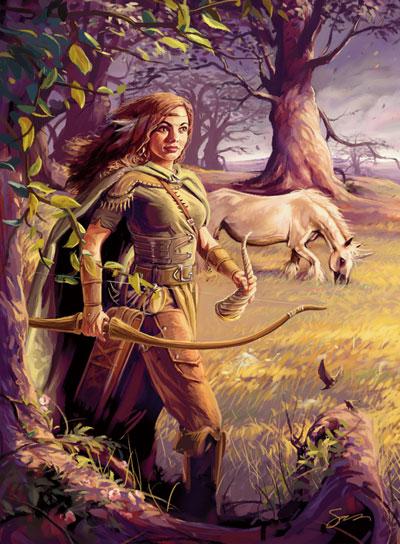
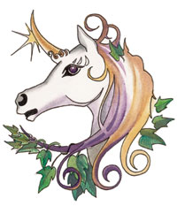

梅莉凯 Mielikki （森林与游侠女神）

费伦神系 中等神力
别称：我们的森林女士 Our Lady of Forest，森林女王 the Forest Queen
圣徽：朝左的独角兽，拥有金色的角与蓝色的眼睛

居住界域：自然之殿 House of Nature
阵营：中立善良 NG
神职：秋季 autumn，树精 dryads，林中生物 forest creatures，森林 forest，游侠 rangers
信徒：德鲁依，精类生物，森林住民，游侠
牧师阵营：守序善良 LG，中立善良 NG，混乱善良 CG
神域：动物 Animal，善良 Good，植物 Plant，旅行 Travel
喜好武器：角刃 The Hornblade（弯刀 scimitar）
梅莉凯是一位幽默的善良神�o，脸上总是带着自信的微笑。她对于结交朋友十分谨慎，然而一旦被她认定为友，她便会热切忠实地保护他们。虽然她明白死亡也是生命周期的一环，但她却不像西凡那斯（Silvanus）那般冷漠，反而时常出于同情心插手医治生物的伤痛。她的形象是一位褐发棕眼、体态强健又优雅的美丽女子，穿着一套绿褐混色的皮甲。
梅莉凯的教会十分关注荒野地区－在这种地区里，游侠们往往就是抵御危险的唯一防线。许多人都认为她的牧师远 比那些西凡那斯信徒、及躲在森林里的精灵们更加乐意去找出文明发展与保护自然之间的平衡点（虽然这种看法不一定正确）。此外，她的教会也被视为是对抗那些凶狠残暴的马拉（Malar）信众所不可或缺的力量。
信奉梅莉凯的牧师、德鲁依、游侠在上午或上半夜时祈祷以获得神术（然而，不论于何时 获得神术，每天都必须于这两个时间进行祈祷）。当经历一段时间的冥思与内省之后，他们便能聆听并了解树木彼此间的低语。每位牧师与德鲁依每个月都必须遵行一个名为「树歌」（the Song of Trees）的仪式，唤起一位树精或树人（dryad or treant），并在当天之内为她（它）服务。教会内最神圣崇高的仪式名为「四圣宴」（the Four Feasts），分别在春分、秋分、夏至、冬至举行，信众们会在仪式中赞美一切存在的感官面向，并高声唱颂对女神的礼赞，尽可能使歌声传进密林深处。此 外，在「绿草节」（Greengrass）与「仲夏节之夜」（Midsummer night）时也会举行类似「四圣宴」的庆祝仪式，但与后者不同之处在于－除了后者原有的仪式之外，还多出了栽种植物的神圣仪式、以及「荒野骑乘」 （the Wild Ride）－在这两天中独角兽群将会齐聚一处，并允许信众乘着��们在森林中奔驰（不可上鞍）。每逢「盾集庆典」（Shieldmeet，四年一次）尾随 「仲夏节」之后出现的年份，这场骑乘奔驰的仪式甚至会持续一整天。几乎所有信奉梅莉凯的牧师都会兼职成为游侠或德鲁依（后者较为少见）。信奉梅莉凯的德鲁依可使用游侠能用的武器与防具，而不会触犯自己的神圣誓言。
历史/与众神的关系 History/Relationship：
梅 莉凯是西凡那斯的女儿，也是埃达丝（Eldath）的姊姊。桂伦�B风暴（Gwaeron Windstorm）与希昂莉亚（Shiallia）都为她服务，而独角兽��芮（Lurue）则是她战斗时骑乘的座骑。她与山达柯尔（Shaundakul）以及洛山达（Lathander）之间的关系非常友好，并努力地对抗邪恶的众神－尤其是马拉（Malar）、塔烙斯 （Talos）、以及塔洛娜（Talona）。
教义 Dogma：
所有智性的生物皆可与自然和谐共存，无须互相毁灭。对 荒野无须感到畏惧，应当投入它的怀抱－荒野自然之道并非邪恶之道。汝当保护「一体至衡」（the Balance），并学习生命的诸多面向－但亦不可忘却大自然那积极成长的本质。汝当保护林中生物、捍卫每一棵树木、在树木枯死（或被砍倒）之处重新栽种、并设法回复被伐木者与用火过度者所扰乱的自然和谐。汝当视自己为森林的一份子，并教导其它人也这么做。严惩那些为了娱乐或残忍狩猎自然荒野生物的恶 人。
牧师与神殿 Clergy & Temples：
信奉梅莉凯的牧师与德鲁依皆致力于保护自然界（尤其是森 林）免受因邪恶或无知而引发的破坏。他们常在森林外缘之间的小型社群之间四处巡回，鼓励当地居民照料森林（与其中的众多生命），并对之保持敬意。为了避免文明对现存森林造成过多威胁，他们屡次向外界传达「审慎使用森林资源」的理念。当必要时，他们会毫不犹豫地动用武力保护森林。信奉梅莉凯的游侠们会保护 （与帮助）西凡那斯与埃达丝的信徒，也与竖琴手同盟（the Harpers）共同保护、重建、甚至扩展森林与林中生物的生存活动范围。他们努力地反抗惯用火焰魔法的势力（特别是红袍法师会，Red Wizards），并鼓励一般民众将森林视为舒适的避难所，教导他们领会自然之美，无须对森林感到惧怕、也无须与森林抗争。
梅莉凯教会的 成员们平时大都四散各处，很少长时间大量聚集。森林女王极少有大型的正式神殿，信徒们大都在林间圣地或小型祭坛对她进行祈祷。如果不是直接建于小树林之内的话，她的神殿内必定都栽种了许多树木－其中至少有一棵橡树，以作为祭拜的圣坛及树精的居所。这些圣堂欢迎所有的小型森林生物前去－有些小动物甚至以该处 为家，整年都住在那里。
梅莉凯教会的仪式服装包括长裤、棕色的靴子、一件短披风（由树精们以蜘蛛丝织成，再以天然颜料染色）、以及一件短 衫（冬季为长袖，夏季为无袖），当战斗时则会再穿上盔甲（通常是炼甲）。服装的颜色随四季更迭而各有不同的底色与缀色－冬季时为白底缀绿、春季时为绿底缀黄、夏季时为黄底缀红、秋季时为红底缀白。此外，信徒们还会在心口佩带梅莉凯的独角兽圣徽（以角、骨雕成，或以银铸成）。
梅莉凯的教会没 有正式的神职体系，相对地，信徒们由教会内最资深的成员们共同领导－此点与竖琴手同盟颇为类似。各由德鲁依、牧师、游侠领导的众多小团体们架构起一张互通声息的情报网络，在有需要时互相合作以达成教会的目标。不过近年来在森林女王的命令之下，教会内已组成了三个不同的分支－「树心」（the Heartwoods，树精与树人）、「枝桠」（Arms of the Forest，牧师与德鲁依）、「针叶」（Needles，游侠）－以避免陷于僵化、并保存古老的森林之道。
梅莉凯的化身 Mielikki's Avatar：
梅 莉凯永远都走在空气之中，她那无声的步伐从未真正接触地面，因此绝不会留下任何踪迹。她偏好让化身使用「至高游侠」（the Supreme Ranger）的形象－一位高大强健、体态优雅的美丽女子，穿着许多游侠爱用的皮甲与绿褐混色的衣饰，一头红褐色的长发披散在肩膀与背上，双瞳像是两泓深不见底的褐色水池。她也能让化身选择以「森林女王」（the Forest Queen）的形象现身－一位发上覆满绿叶与金苔的年轻少女，身着黄绿色的薄纱长袍。脚踏空气的她身旁总是围绕着许多夏日的鸣禽。不论采用何种形象，她的声音都低沉而充满磁性。在从前的年代中，她偶尔也会让前额长出雄鹿的鹿角，并随着凡人的注视而缓缓成长－但自从本莎芭（Beshaba）开始以黑色鹿角作 为圣徽之后，她便不再这么做。森林女士偶尔会骑乘��芮（或其化身）投入战斗。
--
资料来源：费伦大陆信仰与神系《Faiths & Pantheons》
译者：一凡